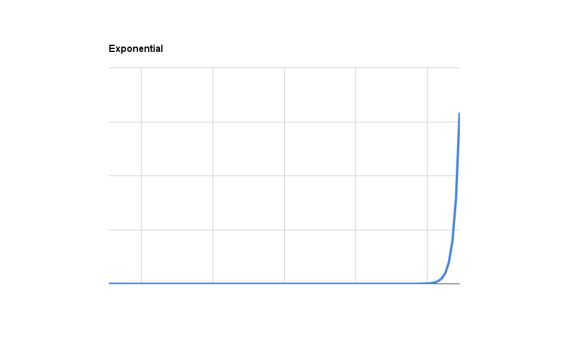

A Few Thoughts on Thinking

I don’t have a lot to say, but I read some interesting articles that followed a theme. I’m going to postpone my venture capital post until next week, but in the meantime enjoy these pieces on thinking:
- You can increase your intelligence: 5 ways to maximize your cognitive potential
- A New View of Brain Development: Scientists Uncover Striking Differences Between the Adult and Newborn Mouse Brain
- Things That Compound
That third one might not fit in as well, but you have to admit that computers are getting better at thinking, however far they have to go. I’ll be back next week with some thoughts and help on thinking about the about the venture capital industry.